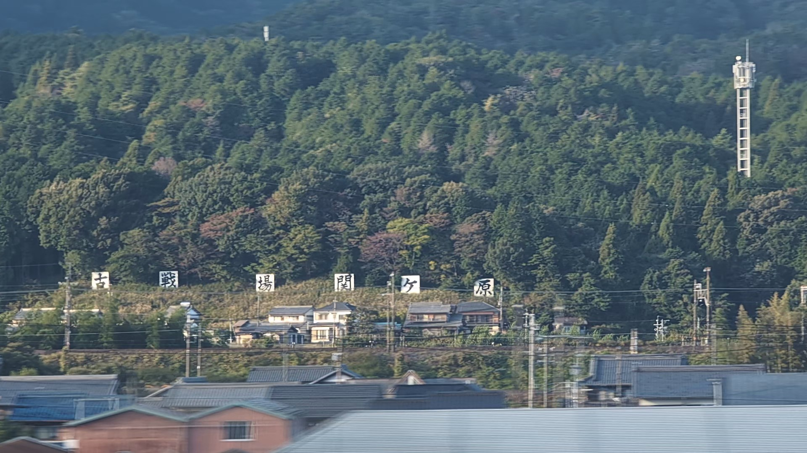

ตัวอย่างทางการจาก Disney+ ญี่ปุ่น
ดูบน YouTube (ภาษาญี่ปุ่น) ↗
หาก SHŌGUN ทำให้คุณสงสัยเกี่ยวกับโทระนางะ บุคคลในประวัติศาสตร์ที่เป็นต้นแบบ หรือญี่ปุ่นที่พวกเขาเคยอาศัย ลองพกความสงสัยนั้นไปกับการเดินทางด้วยรถไฟครั้งหน้า
ระหว่างโตเกียวกับเกียวโตหรือโอซาก้า โทไกโดชินคันเซ็นจะผ่านเซกิงาฮาระ วันนี้คุณเห็นบ้าน ทุ่ง และภูเขา แต่ในปี 1600 พื้นที่นี้เป็นสมรภูมิที่มีส่วนกำหนดทิศทางของญี่ปุ่นต่อมาอีกหลายศตวรรษ ความรู้ประวัติศาสตร์เพียงเล็กน้อยอาจเปลี่ยนวิวจากหน้าต่างของคุณได้
01
จากโทระนางะสู่โทกูงาวะ อิเอยาสุ
ซีรีส์ของ FX เรื่อง SHŌGUNออกอากาศครั้งแรกในปี 2024 ดัดแปลงจากนวนิยายของเจมส์ คลาเวลล์ โดยมีฉากเป็นญี่ปุ่นในปี 1600 โยชิอิ โทระนางะต้องรับมือกับการแย่งชิงอำนาจ จอห์น แบล็กธอร์น นักเดินเรือชาวอังกฤษที่รู้จักกันในชื่ออันจิน เดินทางมาจากต่างแดน ส่วนโทดะ มาริโกะเคลื่อนไหวอยู่ระหว่างภาษา ความภักดี และวัฒนธรรม
โทระนางะได้รับแรงบันดาลใจจากโทกูงาวะ อิเอยาสุ ผู้นำที่มีตัวตนจริงในประวัติศาสตร์ อย่างไรก็ตาม โทระนางะเป็นตัวละครสมมติ บทสนทนาและความสัมพันธ์ในซีรีส์จึงไม่ใช่ชีวประวัติของอิเอยาสุ
ควรเชื่อใจใคร และควรลงมือเมื่อไร คำถามที่ขับเคลื่อนเรื่องราวช่วยเปิดทางสู่ประวัติศาสตร์จริงของเซกิงาฮาระ การเดินทางนี้ตามความเชื่อมโยงทางประวัติศาสตร์ ไม่ได้นำเสนอเซกิงาฮาระในฐานะสถานที่ถ่ายทำ
บทความนี้เริ่มจากซีซัน 1 ของฉบับ FX ในส่วนชมวิวจากรถไฟมีหัวข้อแยกที่กดขยายได้ กล่าวถึงตอนจบซีซันและระบุคำเตือนสปอยล์ไว้
02
ทำไมเซกิงาฮาระจึงสำคัญ
ในการรบที่เซกิงาฮาระปี 1600 กองทัพตะวันออกของอิเอยาสุเอาชนะพันธมิตรฝ่ายตะวันตกที่เกี่ยวข้องกับอิชิดะ มิตสึนาริ ในปี 1603 อิเอยาสุได้เป็นโชกุน ผู้ปกครองฝ่ายทหารของญี่ปุ่น และตั้งรัฐบาลที่เอโดะหรือโตเกียวในปัจจุบัน การปกครองของตระกูลโทกูงาวะดำเนินต่อไปนานกว่า 250 ปี
- 1600การรบที่เซกิงาฮาระกองทัพตะวันออกชนะ ทำให้ฐานอำนาจของอิเอยาสุเข้มแข็งขึ้น
- 1603เริ่มต้นรัฐบาลโชกุนโทกูงาวะอิเอยาสุเป็นโชกุนและตั้งรัฐบาลที่เอโดะ ซึ่งคือโตเกียวในปัจจุบัน
- 1615การล้อมโอซาก้าฤดูร้อนตระกูลโทโยโตมิล่มสลาย ความขัดแย้งยังคงดำเนินต่อหลังเซกิงาฮาระ
การรบครั้งนั้นไม่ได้ทำให้การแย่งชิงทั้งหมดจบลงทันที ชัยชนะที่เซกิงาฮาระ การตั้งรัฐบาลโชกุน และการทำให้อำนาจโทกูงาวะมั่นคง เป็นคนละช่วงขั้น ความขัดแย้งกับตระกูลโทโยโตมิยังดำเนินต่อจนถึงปี 1615
คุณไม่จำเป็นต้องจำชื่อแม่ทัพทุกคนหรือแผนรบทั้งหมดเพื่อเพลิดเพลินกับทางรถไฟช่วงนี้ แค่รู้ว่าเหตุใดสถานที่นี้จึงสำคัญ ก็ทำให้ภูมิทัศน์ที่ผ่านไปมีความหมายอีกชั้นหนึ่ง
03
สถานที่ที่เราผ่านในวันนี้
โทไกโดชินคันเซ็นผ่านเซกิงาฮาระระหว่างสถานีกิฟุ-ฮาชิมะกับไมบาระ ภูมิทัศน์ทางประวัติศาสตร์นี้อยู่บนเส้นทางที่เชื่อมโตเกียวกับเกียวโตและโอซาก้า

ภาพถ่าย: michikusa, 3 พฤศจิกายน 2026
เซกิงาฮาระในเรื่องและในปัจจุบันมีสปอยล์ตอนจบซีซัน 1
คู่มือทางการของ FX สำหรับตอนที่ 10 อธิบายว่าโทระนางะมองเห็นชัยชนะที่เซกิงาฮาระล่วงหน้าอย่างไร ในซีรีส์ สถานที่นี้คือปลายทางของกลยุทธ์ทางการเมืองของเขา ส่วนภาพด้านบนแสดงเซกิงาฮาระในวันนี้ ซึ่งมีทุ่ง บ้าน และสายไฟอยู่ใต้ภูเขา
ความเชื่อมโยงอยู่ระหว่างสถานที่ที่คุณจินตนาการผ่านเรื่องราว กับสถานที่ซึ่งชีวิตประจำวันยังดำเนินต่อ ภาพเหล่านี้ไม่ใช่ภาพอดีตกับปัจจุบันที่ถ่ายในมุมตรงกัน และภาพจากซีรีส์ไม่ใช่หลักฐานของภูมิประเทศจริงหรือสถานที่ถ่ายทำที่เซกิงาฮาระ
อ่านคู่มือตอนที่ 10 ของ FX (ภาษาอังกฤษ มีสปอยล์) ↗เริ่มจากรูปทรงของพื้นที่ ทั้งเมือง ทุ่ง และเนินโดยรอบ ไม่ต้องพยายามระบุตำแหน่งกองทัพเก่าทุกจุด ลองมองสถานที่นี้เป็นภาพรวม ผู้คนอาศัยอยู่ที่นี่ ถนนพาดผ่าน และรถไฟของคุณก็เป็นส่วนหนึ่งของชีวิตปัจจุบัน เพียงรู้ว่ากำลังผ่านที่ไหน ก็อาจทำให้วิวนี้น่าจดจำ


ภาพถ่าย: michikusa, 3 พฤศจิกายน 2026
สิ่งที่ควรมองหา
- ช่วงเส้นทาง
- กิฟุ-ฮาชิมะ–ไมบาระ
- ฝั่งที่นั่ง
- ฝั่งที่นั่ง E ในตู้โดยสารธรรมดา
- จุดสังเกต
- ป้ายสมรภูมิสีขาวขนาดใหญ่
- ช่วงเวลาที่มองเห็น
- ประมาณ 10–20 วินาที
เวลาที่มองเห็นเป็นการประมาณจากการสังเกตจริง และเปลี่ยนไปตามความเร็วและสิ่งบดบัง สถานีเซกิงาฮาระอยู่บนทางรถไฟธรรมดา รถไฟชินคันเซ็นไม่จอดที่นี่
ป้ายอาจผ่านไปก่อนที่คุณจะเตรียมกล้องพร้อม จึงอาจเลือกดูด้วยตาตัวเองก่อน คู่มือพร้อมภาพของเราช่วยบอกว่าควรมองหาอะไร
04
ลงจากรถไฟแล้วออกสำรวจ
ถ้ามีเวลามากขึ้น ให้เริ่มเที่ยวจากสถานีเซกิงาฮาระบน JR สายโทไกโดหลัก เปลี่ยนจากชินคันเซ็นที่นาโกย่าหรือไมบาระ แล้วนั่งรถไฟธรรมดาต่อไป ควรวางแผนเป็นจุดแวะต่างหาก เพราะเซกิงาฮาระไม่ใช่สถานีที่ชินคันเซ็นจอด
พิพิธภัณฑ์อนุสรณ์สมรภูมิเซกิงาฮาระ กิฟุ เป็นจุดเริ่มต้นที่ดี นิทรรศการอธิบายการรบและตำแหน่งของกองทัพทั้งสองฝ่าย เมื่อออกเดินสำรวจรอบ ๆ หลังจากนั้น ชื่อสถานที่เหล่านั้นจะมีระยะทางและขนาดที่สัมผัสได้จริง
ส่วนจัดแสดงภาพและเสียงชั้นหนึ่งให้สิทธิ์ผู้จองล่วงหน้าก่อน ก่อนเดินทางควรตรวจสอบการจอง วันเปิด และข้อมูลเข้าชมล่าสุดจากเว็บไซต์ทางการ
การมองผ่านหน้าต่างชั่วครู่และการเดินสำรวจพื้นที่ ต่างเป็นวิธีทำความรู้จักเซกิงาฮาระ เลือกให้เหมาะกับเวลาที่คุณมี
จากโทระนางะสู่อิเอยาสุ จากซีรีส์สู่ภูมิทัศน์จริง ครั้งหน้าที่เดินทางระหว่างโตเกียวกับเกียวโตหรือโอซาก้า เส้นทางช่วงนี้อาจมีความหมายมากขึ้นอีกนิด
แหล่งข้อมูล ซีรีส์ และภาพถ่าย
- ディズニープラス公式: 『SHOGUN 将軍』予告・侍スピリット篇 (ตัวอย่างทางการ ภาษาญี่ปุ่น)
- FX: คู่มือตอนที่ 10 (ภาษาอังกฤษ มีสปอยล์ตอนจบซีซัน)
- Disney: ตัวละครและบุคคลในประวัติศาสตร์ที่เป็นแรงบันดาลใจ (ภาษาญี่ปุ่น มีสปอยล์)
- FX: ลำดับเหตุการณ์และภูมิหลังทางประวัติศาสตร์ (ภาษาอังกฤษ)
- องค์การส่งเสริมการท่องเที่ยวแห่งประเทศญี่ปุ่น: เซกิงาฮาระ (ภาษาอังกฤษ)
- พิพิธภัณฑ์อนุสรณ์สมรภูมิเซกิงาฮาระ กิฟุ: คู่มือเยี่ยมชม (ภาษาอังกฤษ)
- ประกาศพิพิธภัณฑ์และข้อมูลเข้าชมล่าสุด (ภาษาญี่ปุ่น)
ฉากสมมติ เหตุการณ์ในประวัติศาสตร์ บุคคลต้นแบบ และสถานที่ถ่ายทำ เป็นคนละเรื่องกัน บทความท่องเที่ยวที่ไม่ใช่เว็บไซต์ทางการนี้เริ่มจากความสนใจใน SHŌGUN แล้วเชื่อมไปยังสถานที่หนึ่งในประวัติศาสตร์ญี่ปุ่น ไม่ได้ระบุว่าเซกิงาฮาระเป็นสถานที่ถ่ายทำ
ภาพถ่าย: michikusa เป็นภาพนิ่งจากวิดีโอหน้าต่างรถไฟที่บันทึกเมื่อวันที่ 3 พฤศจิกายน 2026 แสดงพื้นที่รอบเซกิงาฮาระในปัจจุบัน ไม่ใช่ฉากจากซีรีส์